This is my blog post on procedural terrain generation. The terrain of a game is really important, especially in an open-world game, because that's where you spend most of your time. Creating realistic and dynamic terrains adds a lot to the experience of a game, but it's also one of the more challenging parts to get right. In this post I'll go through the way how I made a basic terrain generator.
The first step in creating terrain is generating a heightmap, which determines the elevation of the terrain at specific points. To make this heightmap I make use of perlin noise, this is a technique that creates smooth, natural looking gradients. Perlin noise is a way to generate random-looking patterns that are smooth and continuous, which makes it great for natural shapes like terrain. Instead of just picking random values, it interpolates between gradients, so the result has no sharp jumps.
In this code snippet you can see how I populate the noise vector.
std::vector<float> noise(width * height);
for (int y = 0; y < height; y++) {
for (int x = 0; x < width; x++) {
float noiseValue = perlin.octave2D(x ,y, octaves);
noise[index] = noiseValue;
}
}In this code snippet it goes over the width and height of the terrain and generates a value from a noise function from the siv::PerlinNoise library. It then stores this in an array for later use.
Simply creating a map with perlin noise does not provide enough detail. To make it more detailed you need to increase the number of octaves in the perlin noise. Octaves are basically layers of noise added on top of each other, each one with a higher frequency and lower amplitude. The first octave gives you the broad shape of the terrain, and the ones after that add smaller and smaller details. You usually combine them all together to get a more complex and realistic result.
Here's the difference between using 1 octave and 4 octaves.
Now that you have the height data for your terrain you need to apply it to a mesh. I start with creating a flat plane mesh and then for each vertex, I check the noise map to find the corresponding height based on its position.
When applying the heightmap directly to a flat plane, it looks like this:
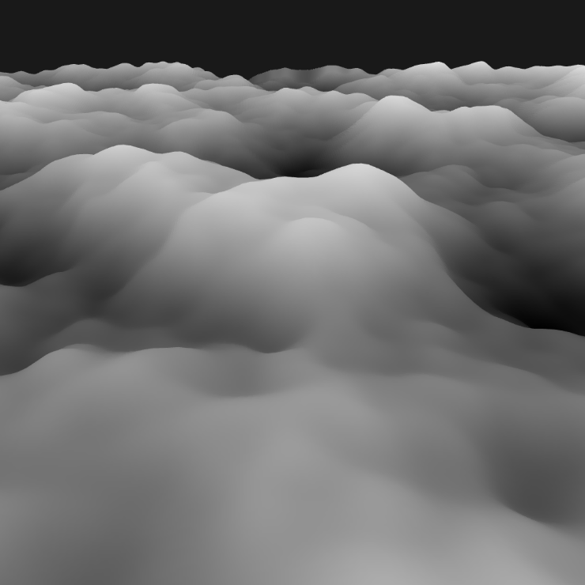
The issue with this terrain is that it looks really bland, It doesn't have high mountains or flat land. You can fix this by raising the height to a power. Raising the height to a power changes the shape of the noise curve, which helps exaggerate the terrain. If you use a power less than 1, you get more flat areas like plains or plateaus. If you use a power greater than 1, it pushes the lower areas down and pulls the higher areas up, creating steeper mountains and deeper valleys.
for (int y = 0; y < height; y++) {
for (int x = 0; x < width; x++) {
float height = pow(noise[x + y * width], 4);
positions.push_back(vec3(x, terrainHeight, z));
}
}In this loop the code once again goes over the width and height of the terrain, it then gets the noise value from the noise vector, then scales it using a power and sets the positions of the vertices to the height.
The images below show what different powers do to the terrain.
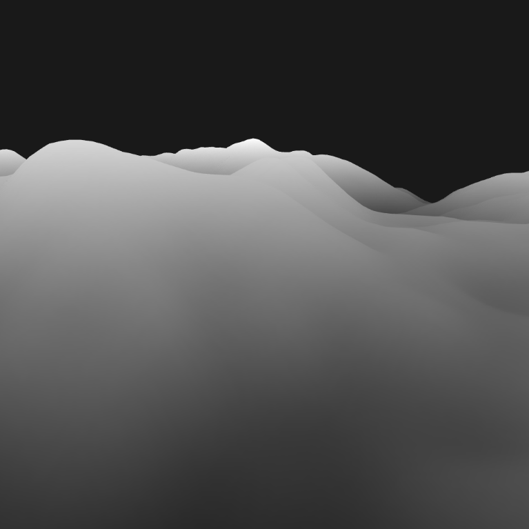
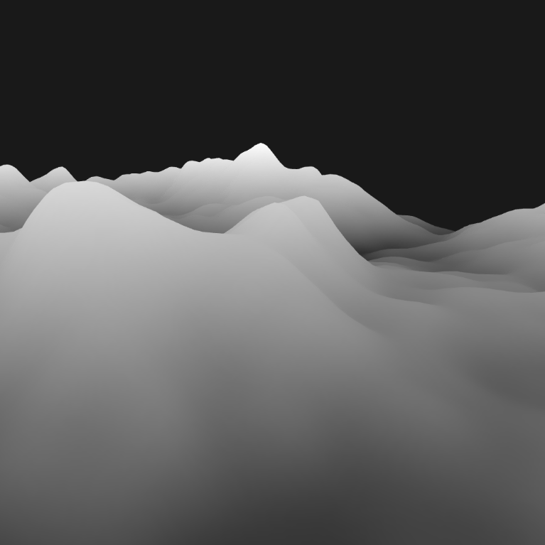
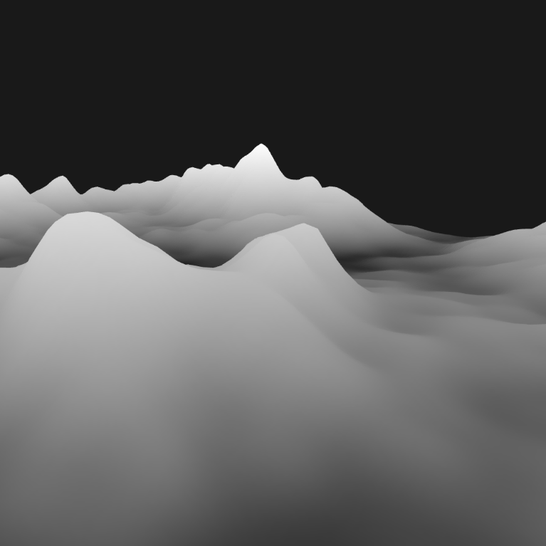
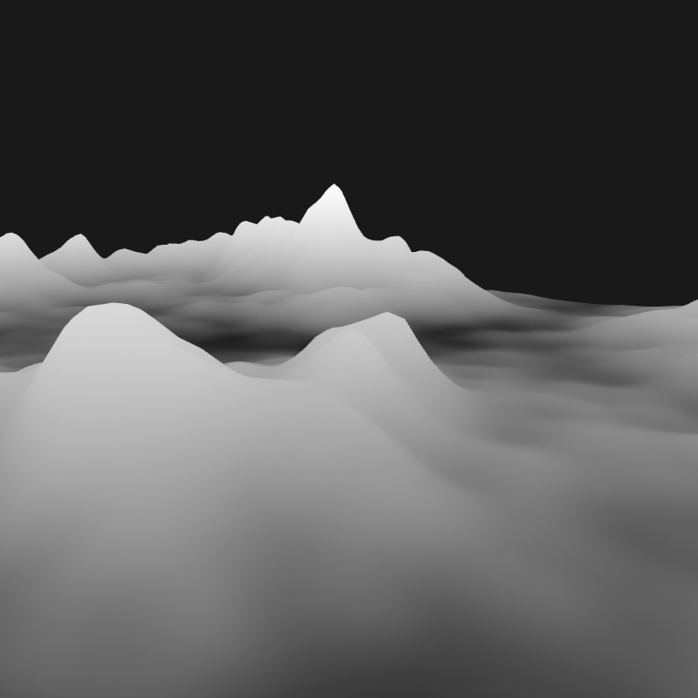
Now that you have the terrain mesh, the next step is to add some color to it. I do this by creating a list of terrain colors, each corresponding to specific height ranges, and apply them to the mesh.
struct TerrainColor
{
std::string name;
float height;
glm::vec3 color;
};
std::vector<TerrainColor> terrainColors = {
{"DeepWater", 0.20f, glm::vec3(35, 60, 182)},
{"Water", 0.30f, glm::vec3(46, 81, 255)},
{"Beach", 0.35f, glm::vec3(245, 245, 122)},
{"Grass", 0.55f, glm::vec3(24, 212, 11)},
{"HighGrass", 0.75f, glm::vec3(14, 135, 5)},
{"Mountain", 0.80f, glm::vec3(115, 113, 111)},
{"HighMountain", 0.95f, glm::vec3(56, 56, 55)},
{"Snow", 1.00f, glm::vec3(255, 255, 255)}
};These values are used by the shader to color the terrain. It gets the color from this function in the shader code.
vec3 getColor(float height) {
vec3 color = vec3(1.0);
for (int i = 0; i < numItems; ++i) {
if (height <= colorMap[i].colorHeight) {
color = colorMap[i].color.rgb;
break;
}
}
return color;
}In this function it takes the height as an input and gives the color as the output. It goes over the full list of the colors, then it checks if the height is lower than the height of the current index in the color list. If so then it returns that color to be used for the terrain.
After applying these values for the height and the color to the mesh I blend the edges together so it doesn't have rigged edges. I do this by calculating how far away a specific point is from a border and interpolate between the two bordering colors. I have added the following code for this to the GetColor function.
//Changed code in GetColor function
for (int i = 0; i < currentBiome.numItems; ++i) {
float blendRange = 0.05;
if (height <= colorMap[i].colorHeight + blendRange) {
if (i == numItems) {
color = colorMap[i].color.rgb;
} else {
color = blendColor(blendRange, height, i);
}
break;
}
}
//Function for blending colors
vec3 blendColor(float blendRange, float height, int index) {
vec3 color = vec3(1.0);
float lowerBound = colorMap[index].colorHeight - blendRange;
float upperBound = colorMap[index].colorHeight + blendRange;
if (height >= lowerBound && height <= upperBound) {
float blendFactor = (height - lowerBound) / (upperBound - lowerBound);
vec3 lowerColor = colorMap[index].color.rgb;
vec3 upperColor = colorMap[index + 1].color.rgb;
color = mix(lowerColor, upperColor, blendFactor);
} else {
color = colorMap[index].color.rgb;
}
return color;
}In the added code to the GetColor function I have set a blend range. In the blendColor function it checks if the height is near the edge of where the color changes, if so it calculates the blend factor based on how far away the height is from the color change. It then mixes the two colors together and returns that to apply it to the mesh.
In the slider below you can see the difference that blending the colors make here.
Now that the terrain has some color you want to add some variation. I have done this by adding biomes. I first generate two noise maps, one for temperature and one for moisture. In the table below you can see what biome I assign to what moisture and temperature values. This produces a nice looking biome map where for example desert and snow biomes won't share a border.
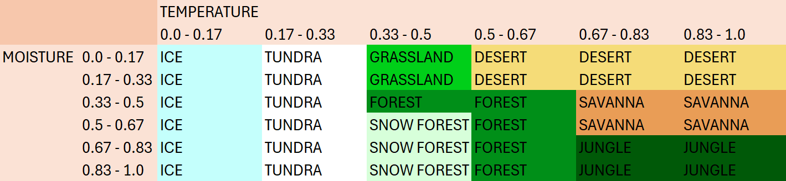
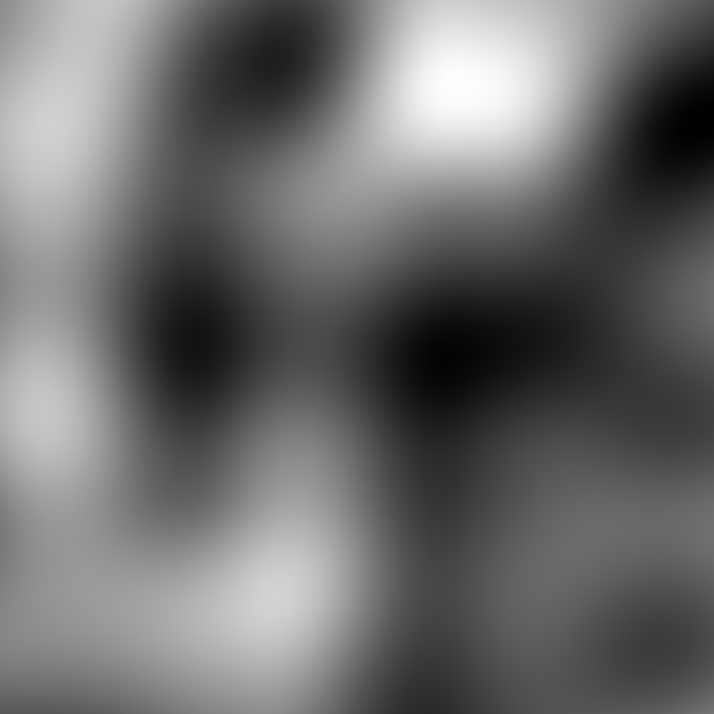
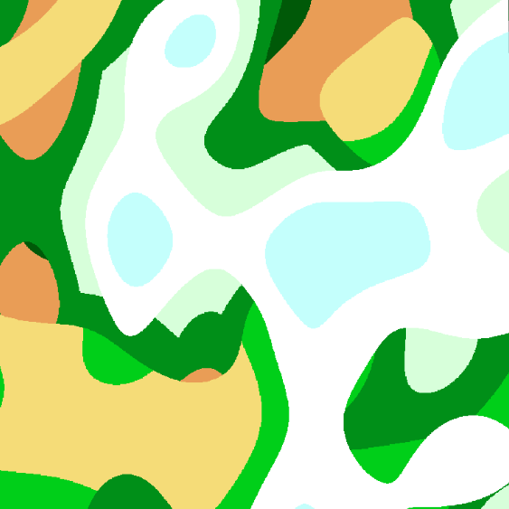
For each biome there is now a vector of TerrainColor structs so that each biome can have different colors. In the shader it first calculates which index should be used for getting the colors, this is done in this function.
const int biomeTable[6][6] = int[][](
int[](0, 1, 2, 3, 3, 3), // 0: Ice, 1: Tundra, 2: Grassland, 3: Desert
int[](0, 1, 2, 3, 3, 3),
int[](0, 1, 4, 4, 5, 5), // 4: Forest, 5: Savanna
int[](0, 1, 6, 4, 5, 5), // 6: Snow Forest
int[](0, 1, 6, 4, 7, 7), // 7: Jungle
int[](0, 1, 6, 4, 7, 7)
);
int getBiomeIndex(float moisture, float temperature) {
for (int i = 0; i < 6; ++i) {
if (moisture >= moistureRanges[i] && moisture < moistureRanges[i + 1]) {
moistureIndex = i;
break;
}
}
for (int i = 0; i < 6; ++i) {
if (temperature >= temperatureRanges[i] && temperature < temperatureRanges[i + 1]) {
temperatureIndex = i;
break;
}
}
return biomeTable[moistureIndex][temperatureIndex];
}It first calculates the moisture index based on the moisture from another perlin map, and it then does the same for the temperature. It then looks at the biomeTable and returns an int that references what biome that point of the terrain is.
With the terrain's structure and biomes complete, the next step is to make it look nicer by adding textures. Now when I create the structs for the biome colors I have also added a texture ID next to the color and height values. This texture ID is a reference to the index in a texture list that is sent to the shader.
The following code shows how I get a texture in the shader based on its biome index and height
vec3 getTexture(float height, int biomeIndex) {
int layer = 0;
biome_struct currentBiome = biomes[biomeIndex];
vec2 scaled_texture_coords = v_texture0 * terrainScale;
vec3 textureColor;
for (int i = 0; i < currentBiome.numItems; ++i) {
if (height <= currentBiome.colorMap[i].colorHeight) {
layer = currentBiome.colorMap[i].textureID;
textureColor = texture(s_terrain_texture_array,
vec3(scaled_texture_coords, layer)).rgb;
break;
}
}
return textureColor;
}This function kind of works the same as the GetColor function. But for this one it first calculates the texture coordinate in the texture using the texture position. It then goes over the color map of the current biome. If it is at the correct height it returns the color of the pixel in the texture corresponding to that biome and height.
This is how the terrain now looks when applying the texture to the terrain
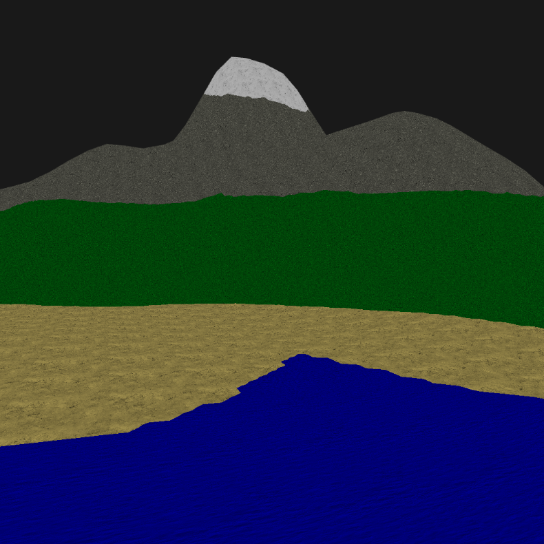
Although the terrain looks much better with textures, sharp transitions between colors and textures at different heights still doesn't look great. This can be fixed by blending the two bordering colors and textures together. This is done by checking if it is within the blendRange and then smoothly interpolating between the two bordering colors and textures.
float blendRange = 0.05;
if (height <= currentBiome.colorMap[i].colorHeight + blendRange) {
color = blendColor(blendRange, height, currentBiome, i);
break;
}
vec3 blendColor(float blendRange, float height, biome_struct currentBiome, int index) {
vec3 color = vec3(1.0);
float lowerBound = currentBiome.colorMap[index].colorHeight - blendRange;
float upperBound = currentBiome.colorMap[index].colorHeight + blendRange;
float blendFactor = (height - lowerBound) / (upperBound - lowerBound);
vec3 lowerColor = currentBiome.colorMap[index].color.rgb;
vec3 upperColor = currentBiome.colorMap[index + 1].color.rgb;
color = mix(lowerColor, upperColor, blendFactor);
return color;
}When applying the blending between colors and textures it will look like this:
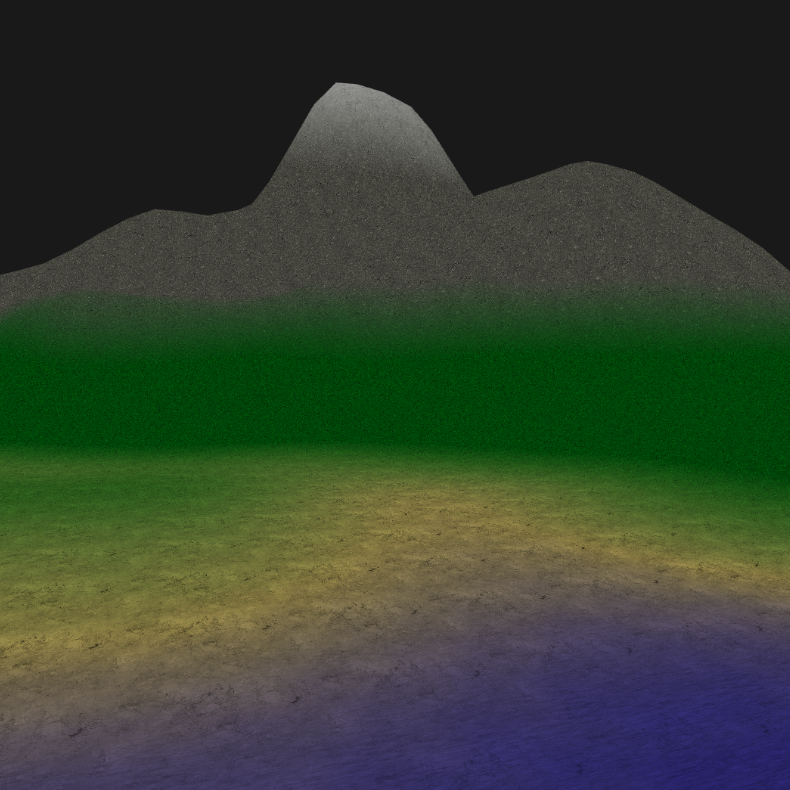
Another way to enhance the visual aspect of the terrain is to add a different color and texture if the terrain has a specific angle. I calculate the angle based on the mesh normal, after that I apply a different color and texture to that part of the mesh.
vec3 normal = normalize(v_normal);
float slopeRadians = acos(normal.y);
float slope = degrees(slopeRadians);In the image below you can see that where the terrain is steeper than 45 degrees, the terrain gets a different color.
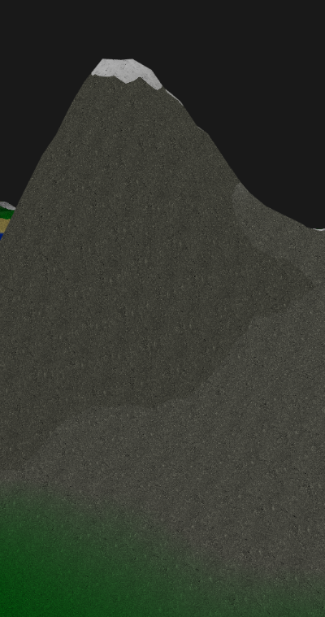
Another useful feature is the ability to dynamically change the colors and textures of each biome while the program is running. I utilize ImGui for data input and then update the BiomeDataUBO uniform.
The image below shows how the editable data is displayed within the program.
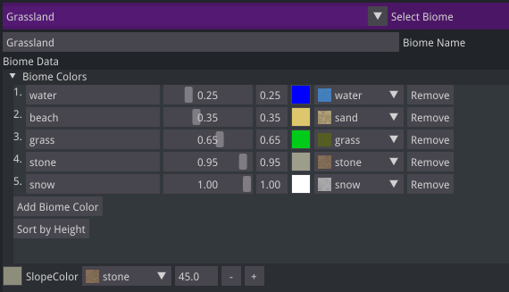
The final terrain generator successfully creates random, realistic landscapes with biomes, textures, and smooth transitions. One of the key features is the ability to modify biome data like biome colors, texture, and height. This makes it very useful for tweaking and achieving a desired look.
In the video below, you can see how the terrain responds to changes in real-time. Changing biome colors, textures and adding new colors are happening instantly, showcasing the flexibility of the system.
Additionally here are two examples of what sort of terrain the generator can make.
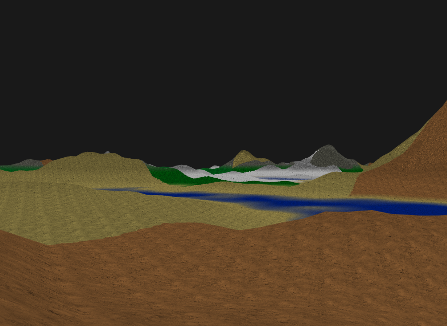
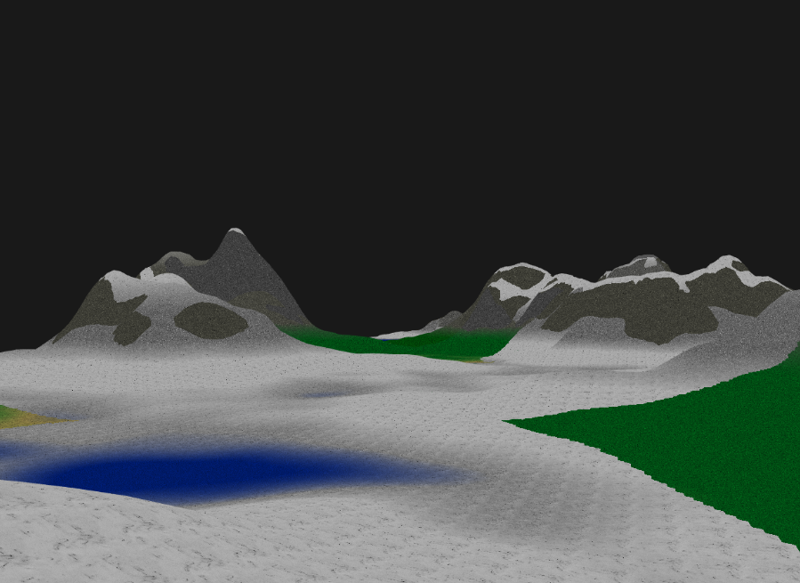
While the terrain generator achieves great results, there are still some areas that could be improved to enhance the final output: